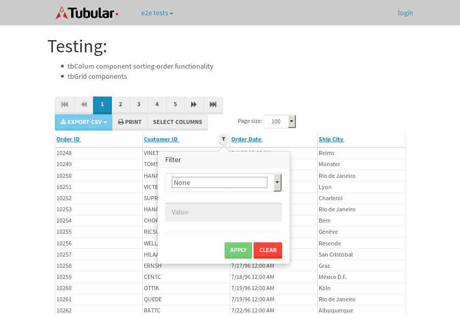

tbColumn.Grid Sorting - 29.044sTests: 5Skipped: 0Failures: 0 should sort data in ascending order then on descending order when sorting by Order Id column - 5.682sTests passed: 100.00%should order data in ascending order when click-sorting an unsorted text column - 5.459sTests passed: 100.00%should order data in descending order when click-sorting an ascending-sorted text column - 5.956sTests passed: 100.00%should order data in ascending order when click-sorting an unsorted date column - 5.331sTests passed: 100.00%should order data in descending order when click-sorting twice an unsorted date column - 6.616sTests passed: 100.00%
tbColumn.Grid Components - 4.316sTests: 3Skipped: 0Failures: 0 should print grid - 1.504s***Skipped***Tests passed: 0%should export grid - 1.395s***Skipped***Tests passed: 0%should show column selector - 1.417sTests passed: 100.00%
tbSingleForm.Form validations - 1.984sTests: 2Skipped: 0Failures: 0 should have an empty required field - 1.109sTests passed: 100.00%should not be able to click on save - 0.874sTests passed: 100.00%
Tubular Filters.tbColumnFilter - 109.458sTests: 12Skipped: 0Failures: 0 should cancel filtering when clicking outside filter-popover - 10.2sTests passed: 100.00%should disable Value text-input for "None" filter - 6.701sTests passed: 100.00%should disable apply button for "None" filter - 6.778sTests passed: 100.00%should decorate popover button when showing data is being filtered for its column - 12.26sTests passed: 100.00%should correctly filter data for the "Equals" filtering option - 8.575sTests passed: 100.00%should correctly filter data for the "Not Equals" filtering option - 8.91sTests passed: 100.00%should correctly filter data for the "Contains" filtering option - 9.129sTests passed: 100.00%should correctly filter data for the "Not Contains" filtering option - 8.436sTests passed: 100.00%should correctly filter data for the "Starts With" filtering option - 6.601sTests passed: 100.00%should correctly filter data for the "Not Starts With" filtering option - 6.889sTests passed: 100.00%should correctly filter data for the "Ends With" filtering option - 6.66sTests passed: 100.00%should correctly filter data for the "Not Ends With" filtering option - 6.907sTests passed: 100.00%
Tubular Filters.tbColumnDateTimeFilter - 135.777sTests: 12Skipped: 0Failures: 0 should cancel filtering when clicking outside filter-popover - 7.701sTests passed: 100.00%should disable Value text-input for "None" filter - 6.656sTests passed: 100.00%should disable apply button for "None" filter - 6.458sTests passed: 100.00%should clear filtering when clicking on Clean button - 17.636sTests passed: 100.00%should decorate popover button when showing data is being filtered for its column - 11.603sTests passed: 100.00%should correctly filter data for the "Equals" filtering option - 6.847sTests passed: 100.00%should correctly filter data for the "Not Equals" filtering option - 6.987sTests passed: 100.00%should correctly filter data for the "Between" filtering option - 12.665sTests passed: 100.00%should correctly filter data for the "Greater-or-equal" filtering option - 12.264sTests passed: 100.00%should corretlly filter data for the "Greater" filtering option - 11.946sTests passed: 100.00%should correctly filter data for the "Less-or-equal" filtering option - 11.817sTests passed: 100.00%should correctly filter data for the "Less" filtering option - 11.92sTests passed: 100.00%
Tubular Filters.tbColumnOptionsFilter - 82.074sTests: 3Skipped: 0Failures: 0 should cancel filtering when clicking outside filter-popover - 8.732sTests passed: 100.00%should decorate popover button when showing data is being filtered for its column - 11.491sTests passed: 100.00%should filter column-elements in accordance to the selected filter when selecting a single option - 50.174sTests passed: 100.00%
Tubular Filters.tbTextSearch - 48.309sTests: 5Skipped: 0Failures: 1 min-chars is not set - 0.993sTests passed: 100.00%should filter data in searchable-column customer name to matching inputted text, starting from 3 characters - 6.824sTests passed: 100.00%should filter data in searchable-column shipper city to matching inputted text, starting from 3 characters - 11.897sTests passed: 100.00%should show clear button when there is inputted text only - 6.387sTests passed: 100.00%should clear filtering when clicking clear button - 16.519sExpected 10 not to be 10.✗Tests passed: 0.00%
tbForm related components.tbCheckboxField - 7.569sTests: 2Skipped: 0Failures: 0 should save changes on "SAVE" - 3.892sTests passed: 100.00%should discard changes on "CANCEL" - 1.826sTests passed: 100.00%
tbForm related components.tbDropDownEditor - 12.36sTests: 5Skipped: 0Failures: 0 should set initial input value to the value of "value" attribute when defined - 1.711sTests passed: 100.00%should show the component name value in a label field when "showLabel" attribute is true - 2.11sTests passed: 100.00%should show a help field equal to this attribute, is present - 2.275sTests passed: 100.00%should submit modifications to item/server when clicking form "Save" - 3.255sTests passed: 100.00%should NOT submit modifications to item/server when clicking form "Cancel" - 2.402sTests passed: 100.00%
tbForm related components.tbTextArea - 16.999sTests: 7Skipped: 0Failures: 0 should set initial input value to the value of "value" attribute when defined - 1.6sTests passed: 100.00%should be invalidated when the number of chars is not in the range of "min" and "max" attributes - 2.059sTests passed: 100.00%should show the component name value in a label field when "showLabel" attribute is true - 1.685sTests passed: 100.00%should show a help field equal to this attribute, is present - 2.615sTests passed: 100.00%should require the field when the attribute "required" is true - 2.118sTests passed: 100.00%should submit modifications to item/server when clicking form "Save" - 3.293sTests passed: 100.00%should NOT submit modifications to item/server when clicking form "Cancel" - 2.723sTests passed: 100.00%
tbForm related components.tbDateEditor - 17.491sTests: 6Skipped: 0Failures: 4 should set initial date value to the value of "value" attribute when defined - 2.156sExpected false to be true.✗Tests passed: 0.00%should be invalidated when the date is not in the range of "min" and "max" attributes - 2.62sExpected false to be true.✗Expected 1 to be less than 1.✗Tests passed: 33.33%should show the component name value in a label field when "showLabel" attribute is true - 3.48sTests passed: 100.00%should show a help field equal to this attribute, is present - 2.035sTests passed: 100.00%should submit modifications to item/server when clicking form "Save" - 2.676sExpected false to be true.✗Tests passed: 0.00%should NOT submit modifications to item/server when clicking form "Cancel" - 2.91sExpected false to be true.✗Tests passed: 0.00%
tbForm related components.tbTypeaheadEditor - 16.857sTests: 7Skipped: 0Failures: 1 should show an options list when there is an API-info/component entered-data - 1.867sTests passed: 100.00%should select the option clicked - 2.301sTests passed: 100.00%should show a "delete" button when an option/match is selected, and delete the option if button is clicked - 2.344sFailed: each key must be a number of string; got boolean✗Tests passed: 50.00%should show a label value equal to the component name when "showLabel" attribue is true - 1.712sTests passed: 100.00%should require a value when "require" attribute is true - 2.263sTests passed: 100.00%should submit modifications to item/server when clicking form "Save" - 3.477sTests passed: 100.00%should NOT submit modifications to item/server when clicking form "Cancel" - 2.123sTests passed: 100.00%
tbForm related components.tbSimpleEditor - 23.378sTests: 9Skipped: 0Failures: 1 should set initial input value to the value of "value" attribute when defined - 1.952sTests passed: 100.00%should be invalidated when the number of chars is not in the range of "min" and "max" attributes - 4.16sTests passed: 100.00%should show the component name value in a label field when "showLabel" attribute is true - 2.165sTests passed: 100.00%should set input placeholder to the value of "placeholder" attribute - 2.316sTests passed: 100.00%should validate the control using the "regex" attribute, if present - 2.365sFailed: each key must be a number of string; got function✗Tests passed: 0.00%should show a help field equal to this attribute, is present - 2.815sTests passed: 100.00%should require the field when the attribute "required" is true - 2.069sTests passed: 100.00%should submit modifications to item/server when clicking form "Save" - 2.724sTests passed: 100.00%should NOT submit modifications to item/server when clicking form "Cancel" - 2.09sTests passed: 100.00%
tbForm related components.tbNumericEditor - 17.098sTests: 7Skipped: 0Failures: 0 should set initial component value to the value of "value" attribute when defined - 1.642sTests passed: 100.00%should be invalidated when the entered number is not in the range of "min" and "max" attributes - 2.226sTests passed: 100.00%should show the component name value in a label field when "showLabel" attribute is true - 1.64sTests passed: 100.00%should show a help field equal to this attribute, is present - 2.293sTests passed: 100.00%should require the field when the attribute "required" is true - 2.599sTests passed: 100.00%should submit modifications to item/server when clicking form "Save" - 2.969sTests passed: 100.00%should NOT submit modifications to item/server when clicking form "Cancel" - 2.968sTests passed: 100.00%
tbForm Connection Error NoModelKey - 4.645sTests: 1Skipped: 0Failures: 0 tbForm connection error functionality - 0.421sTests passed: 100.00%
tbForm Connection Error NoServerUrl - 3.298sTests: 1Skipped: 0Failures: 0 tbForm connection error functionality - 0.4sTests passed: 100.00%
tbForm Connection Error NoServerUrl2 - 2.527sTests: 1Skipped: 0Failures: 1 tbForm connection error functionality - 0.448sExpected '' to equal 'No data found'.✗Tests passed: 0.00%
tb Form Date Editor.tbDateEditor - 16.986sTests: 6Skipped: 0Failures: 0 should set initial date value to the value of "value" attribute when defined - 1.842sTests passed: 100.00%should be invalidated when the date is not in the range of "min" and "max" attributes - 2.511sTests passed: 100.00%should show the component name value in a label field when "showLabel" attribute is true - 2.112sTests passed: 100.00%should show a help field equal to this attribute, is present - 2.759sTests passed: 100.00%should submit modifications to item/server when clicking form "Save" - 3sTests passed: 100.00%should NOT submit modifications to item/server when clicking form "Cancel" - 2.811sTests passed: 100.00%
tbGridComponents - 8.516sTests: 6Skipped: 0Failures: 0 should add item with newRow method - 1.792sTests passed: 100.00%should add item with newRow method and cancel action - 0.679sTests passed: 100.00%should update item with tbSaveButton - 1.425sTests passed: 100.00%should update item with tbSaveButton and cancel action - 0.941sTests passed: 100.00%should remove item with tbRemoveButton - 0.918sTests passed: 100.00%should remove item with tbRemoveButton and cancel action - 0.739sTests passed: 100.00%
tbGridPager.navigation buttons - 8.044sTests: 1Skipped: 0Failures: 0 should perform no action when clicking on the numbered navigation button corresponding to the current-showing results page - 1.196sTests passed: 100.00%
tbGridPager.navigation buttons.first/non-last results page related functionallity - 3.389sTests: 2Skipped: 0Failures: 0 should disable "first" and "previous" navigation buttons when in first results page - 1.602sTests passed: 100.00%should enable "last" and "next" navigation buttons when in a results page other than last - 1.787sTests passed: 100.00%
tbGridPager.navigation buttons.last/non-first results page related functionallity - 3.457sTests: 2Skipped: 0Failures: 0 should disable "last" and "next" navigation buttons when in last results page - 1.958sTests passed: 100.00%should enable "first" and "previous" navigation buttons when in a results page other than first - 1.499sTests passed: 100.00%
tbGridPager.page navigation - 6.741sTests: 5Skipped: 0Failures: 0 should go to next results page when clicking on next navigation button - 1.565sTests passed: 100.00%should go to previous results page when clicking on previous navigation button - 1.43sTests passed: 100.00%should go to last results page when clicking on last navigation button - 1.195sTests passed: 100.00%should go to first results page when clicking on first navigation button - 1.45sTests passed: 100.00%should go to corresponding results page when clicking on a numbered navigation button - 1.101sTests passed: 100.00%
tbGridPagerInfo - 4.484sTests: 2Skipped: 0Failures: 0 should show text in accordance to numbered of filter rows and current results-page - 1.303sTests passed: 100.00%should show count in footer - 0.38sTests passed: 100.00%
tbHttp - 23.233sTests: 8Skipped: 0Failures: 0 should be authenticated - 3.04sTests passed: 100.00%retrieve data - 3.581sTests passed: 100.00%should not login bad credentials - 2.354sTests passed: 100.00%should have a refresh token - 2.401sTests passed: 100.00%should remove authentication - 3.469sTests passed: 100.00%get method-Is not authenticated - 2.29sTests passed: 100.00%post method-Is not authenticated - 2.31sTests passed: 100.00%should regenerate access token on post - 3.788sTests passed: 100.00%
LocalData.Grid Local Data Sorting - 6.965sTests: 4Skipped: 0Failures: 1 should order data in ascending order when click-sorting an unsorted text column - 1.603sTests passed: 100.00%should order data in descending order when click-sorting an ascending-sorted text column - 1.714sTests passed: 100.00%should correctly filter data for the "Contains" filtering option - 1.715sFailed: Element is not currently interactable and may not be manipulated✗Tests passed: 0.00%should correctly filter data for the "Contains" with ENTER key - 1.931sTests passed: 100.00%
OData.Grid OData Sorting - 31.056sTests: 7Skipped: 0Failures: 1 should order data in ascending order when click-sorting an unsorted numeric column - 5.486sTests passed: 100.00%should order data in descending order when click-sorting an ascending-sorted numeric column - 4.564sTests passed: 100.00%should order data in ascending order when click-sorting an unsorted text column - 3.205sTests passed: 100.00%should order data in descending order when click-sorting an ascending-sorted text column - 4.322sTests passed: 100.00%should order data in ascending order when click-sorting an unsorted date column - 5.836sTests passed: 100.00%should order data in descending order when click-sorting an ascending-sorted date column - 4.69sTests passed: 100.00%should correctly filter data for the "Contains" filtering option - 2.952sFailed: Element is not enabled✗Tests passed: 0.00%
tbPageSizeSelctor - 17.367sTests: 4Skipped: 0Failures: 0 should filter up to 10 data rows per page when selecting a page size of "10" - 2.189sTests passed: 100.00%should filter up to 20 data rows per page when selecting a page size of "20" - 2.201sTests passed: 100.00%should filter up to 50 data rows per page when selecting a page size of "50" - 5.145sTests passed: 100.00%should filter up to 100 data rows per page when selecting a page size of "100" - 4.985sTests passed: 100.00%
tbRowSelectable - 12.554sTests: 2Skipped: 0Failures: 0 selected rows - 6.816sTests passed: 100.00%unselected rows - 4.169sTests passed: 100.00%
tbSingleForm.Form fields - 14.294sTests: 7Skipped: 0Failures: 1 should load correct info - 1.07sTests passed: 100.00%should change customer name - 0.886sTests passed: 100.00%should save it - 3.61sFailed: Element is not enabled✗Tests passed: 0.00%should clear the inputs - 1.08sTests passed: 100.00%should update - 1.652sTests passed: 100.00%should reset editor - 2.993sTests passed: 100.00%should not save if not Changes - 3sTests passed: 100.00%
tbSingleForm.Form validations - 3.098sTests: 2Skipped: 0Failures: 0 should load correct info - 0.897sTests passed: 100.00%should not be able to click on save - 2.201sTests passed: 100.00%
tubularTemplateServiceModule.#createColumns() - 1.548sTests: 2Skipped: 0Failures: 0 should return an array with 7 elements - 0.787sTests passed: 100.00%first element should match - 0.76sTests passed: 100.00%
tubularTemplateServiceModule.#generateFieldsArray() - 1.779sTests: 2Skipped: 0Failures: 0 should return an array with 7 elements - 0.785sTests passed: 100.00%first element should match - 0.993sTests passed: 100.00%
tubularTemplateServiceModule.#generatePopup() - 0.881sTests: 1Skipped: 0Failures: 0 should html match - 0.881sTests passed: 100.00%
tubularTemplateServiceModule.#getEditorTypeByDateType() - 4.433sTests: 4Skipped: 0Failures: 0 should be tbDateTimeEditor - 0.893sTests passed: 100.00%should be tbNumericEditor - 1.411sTests passed: 100.00%should be tbCheckboxField - 1.316sTests passed: 100.00%should be tbSimpleEditor - 0.813sTests passed: 100.00%
tubularTemplateServiceModule.#generateForm() - 2.29sTests: 3Skipped: 0Failures: 0 should single layout html match - 0.714sTests passed: 100.00%should two columns layout html match - 0.839sTests passed: 100.00%should three columns layout html match - 0.736sTests passed: 100.00%
tubularTemplateServiceModule.#generateCells() - 2.104sTests: 1Skipped: 0Failures: 0 should html match - 2.104sTests passed: 100.00%
tubularTemplateServiceModule.#generateGrid() - 0.769sTests: 1Skipped: 0Failures: 0 should html match - 0.769sTests passed: 100.00%


{kind=link}